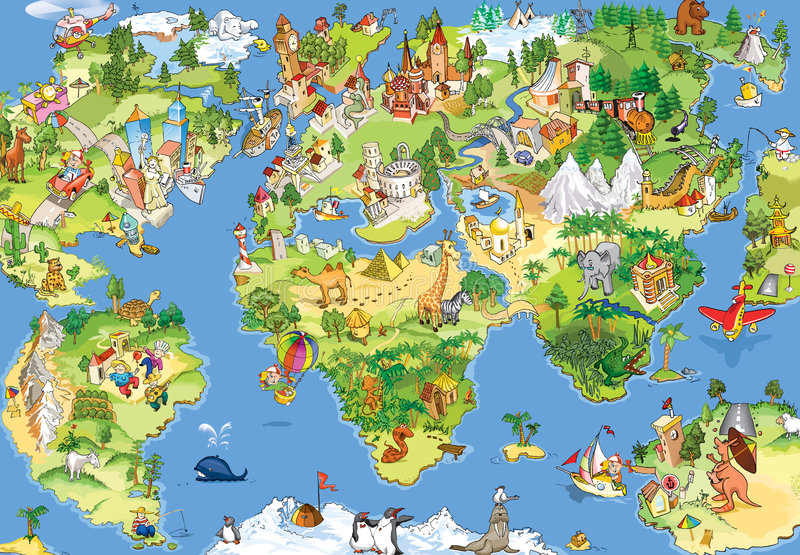

What is the Earth Index?
The Earth Index reports the contributions countries make to the well-being of our planet
Protecting our economic and human well-being
We are living in an era where global lockdown due to the pandemic, the climate emergency, and the increasing "black-swan" events threaten economic and human well-being. These symptoms of the breakdown of the well-being of our planet are ever increasing in diversity and magnitude. We have been reporting the spread of the pandemic, carbon emissions,water shortages and scarcities, energy statistics, material statistics, etc. to report the harm that we cause to our planet. Much of this harm is justified as the need for human progress.
Nasdaq, DOW 30, S&P 500, Euronext 100, Nikkei 225, BSE Sensex, Hang Seng Index, Shenzhen Index, GDP, and HDI are some of the Indexes we use to report our contributions to economic or human well-being and progress.
In the absence of reporting our contributions to the well-being of our planet, we do not recognize them or act to increase them. If we do not recognize or act on our contributions or increase them, we fail to ensure the well-being of our planet. If we fail to ensure the well-being of our planet, we will fail to protect our investments, to ensure our economic or human well-being.
Protecting the well-being of our planet
There is, therefore, a need to report the good we do for the well-being of the planet. There is a need to reinforce the good.
The Earth Index addresses that need to allow us to recognize, value, and improve the contributions we make to the well-being of our planet. We contribute to the well-being of our planet through the interactions we have with each other, with other life forms, with ecosystems, and with the human designed systems and organizations in our country.
The Earth Index reports the contributions that the people of a country, together, make to the well-being of the planet.
The conversations we have shape our world
The Earth Index provides us a means to engage in a conversation of contribution, not environmental destruction.
It provides a common purpose of ensuring the well-being of our planet, not a short-sighted purpose of exploiting our planet at the cost of planetary well-being. It gives peace a new meaning moving it from the peace of security to the security of well-being.
By reporting the contributions countries make to well-being of our planet, we create conversations to find directions for better interactions with each other, other species, with our ecosystems, and with organizations and systems of our design.
The ability to recognize our contributions to the well-being of our planet is a a proactive way to manage risk. It provides us a means to expand our ESG (Environment, Sustainability, and Governance) frameworks to include the well-being of our planet and a sustainable means to impact investing.
By encouraging countries to contribute to the well-being of our planet, we also protect the return on our investments by ensuring both: human well-being and economic well-being.
The Earth Index
The contributions countries made to the well-being of our planet
The Earth Index reports contributions countries made to the well-being of our planet. Countries contribute to the well-being of our planet through the interactions its people have with each other, with other life forms, with ecosystems, and with the human designed systems and organizations. Here is an overview of the contributions 67 countries, where data was available from 1992 to 2019, made towards the well-being of our planet. Africa and Asia contribute more than the rest of the world put together.
Interactions that Contribute to the Well-being of Our Planet
While there are many ways in which it may be possible to score the interactions people have with each other, with other life forms, with ecosystems, and with the human designed systems and organizations in each country, those that are simple, intuitive, do not require long studies, experts, or lots of data help us recognize contributions easily and respond to them
Interactions with each-other
Interactions with each-other
Interactions that enable the people in a country to participate in interactions with each other without any threats, violence, or need to seek out other lands for their need to interact with each other, contribute to the well-being of our planet.
The more the proportion of people who do not seek interaction with other people in other lands, the more they contribute to the well-being of our planet.
Interactions with other species
Interactions with other species
Interactions that leave space for other species - and show restraint in occupying all the land, air, and water in our country - contribute to the well-being of our planet.
The more the space that a country leaves for other species, the more it contributes to the well-being of our planet.
Interactions with ecosystems
Interactions with ecosystems
Interactions that show restraint and reduce the aggression caused by exploitation, encroachment, and pollution on every unit of land, contribute to the well-being of our planet.
The less the exploitation, encroachment, or pollution per unit of land in a country, the more it contributes to the well-being of our planet.
Interactions with human designed systems
Interactions with human designed systems
Interactions with the systems and organizations that the people of a country have created to provide them to live peaceful, healthy lives ensure inclusion and performance - their governments, businesses, and non-governmental organizations - contribute to the well-being of our planet.
The better the interactions of the people with the systems and organizations that they have created, the longer they live.
Performance of Countries
The actions, policies and culture of a country translate into its performance in the short-term, medium-term, and long-term in contributing to the well-being of our planet

The decisions and actions of the people and organizations in a country influence the contributions the country makes to the well-being of our planet in the short-term. As decisions and actions change from year-to-year, the short-term contributions are affected.
The policies practices in a country influence the contributions the country makes to the well-being of our planet in the medium-term. Policies change more slowly than actions and decisions. They also alter the actions and decisions driven by the policy for a longer time-frame. Policies, therefore, influence the contributions of a country over a longer-term.
The culture in a country drives the contributions it makes to the well-being of our planet in the long-term. Cultures last long and can provide resilience to the contributions made by a country to the well-being of our planet. They can also ensure the policies and actions move the contributions of the country in the same direction.
Interactions that Change How Countries Perform
The actions, policies, and culture that drive the interactions people have with each other, with other life forms, with ecosystems, and with the human designed systems and organizations in each country, alter a countries performance in the short, medium, and long-term
Interactions with each-other
Interactions with each-other
Interactions of people that are hospitable, inclusive, welcoming, participative, and non-violent, contribute to increasing the performance of their country to the well-being of our planet.
These may be short term actions, driven by fashions, fads, or strong examples. They may be driven by policies framed by their administrators, representatives, or leaders. Or they may be the result of the culture that defines their way of living and interacting with their world.
Interactions with other species
Interactions with other species
Interactions that result in leaving more space - land, air, and water in their country -for other species improve the performance of their country in contributing to the well-being of our planet.
These may be short term actions, driven by fashions, fads, or strong examples. They may be driven by policies framed by their administrators, representatives, or leaders. Or they may be the result of the culture that defines their way of living and interacting with their world.
Interactions with ecosystems
Interactions with ecosystems
Actions, policies, and culture that help the people of a country to reduce its exploitation, encroachment, and pollution on every unit of land, improve the countries performance in contributing to the well-being of our planet.
Short-term performance changes usually reflect actions driven by fashions, fads, reactions to events, and strong influencers. Medium-term performance changes usually reflect the consequences of policy driven actions. Long-term performance changes usually reflect the consequences of the culture of the people in a country.
Interactions with human designed systems
Interactions with human designed systems
The actions, policies, and culture that improve the access and quality of food, health, education, economy, security, dignity, and fairness, improve the performance of their country in the contributions it makes to the well-being of our planet.
Short-term performance changes usually reflect actions driven by fashions, fads, reactions to events, and strong influencers. Medium-term performance changes usually reflect the consequences of policy driven actions. Long-term performance changes usually reflect the consequences of the culture of the people in a country.
Get Involved in Contributing to the Well-being of Our Planet
Here are some ways you can get involved in improving the contributions of your country to the well-being of our planet